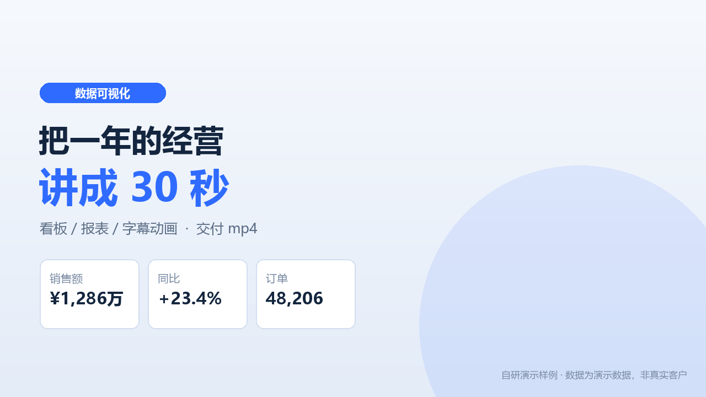
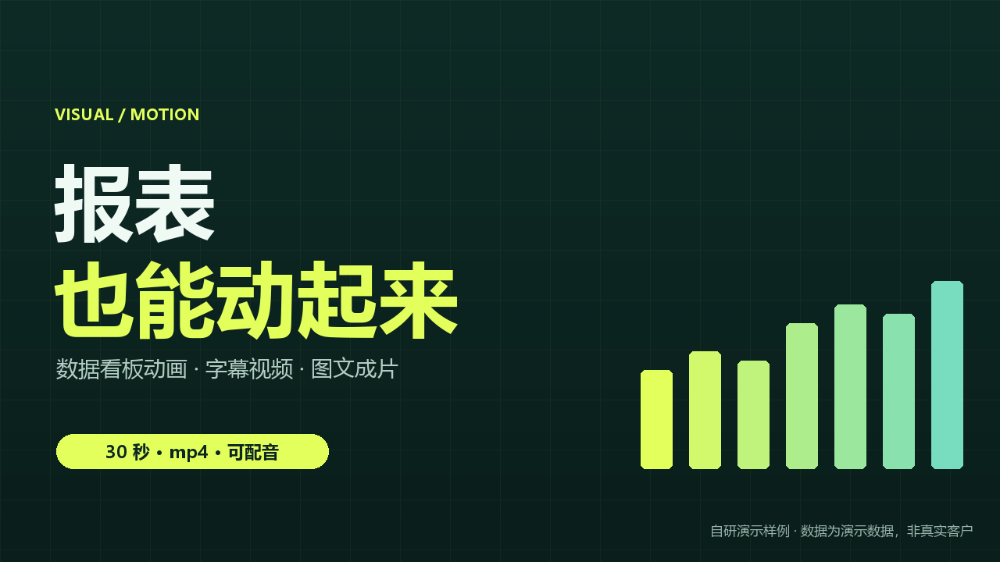

样例 · 数据看板动画
把一张看板
 A · 深色科技（当前）
A · 深色科技（当前）
把一张看板
做成 30 秒的横屏成片
片头 → 四张 KPI 卡数字滚动 → 12 个月柱子逐条长出、叠加趋势线 → 三条结论卡 → 片尾。全程带字幕条，静音播放也能看懂。 数据或文案一改，脚本重跑就出新片，不用重做设计。
1920 × 1080横屏 16:9
30.0 秒30 fps · 900 帧
H.264883 KB，直传平台无压力
5 段结构片头 / KPI / 趋势 / 结论 / 片尾
说明：画面中的卡片、柱子、趋势线、底纹全部由绘图脚本生成，不含实拍素材，也不含 AI 生成图片； 数据为虚构示例，不含任何真实客户数据。封面另有浅色商务版与撞色版，可按投放场景替换。
A · 深色科技（当前）
B · 浅色商务
C · 撞色简约